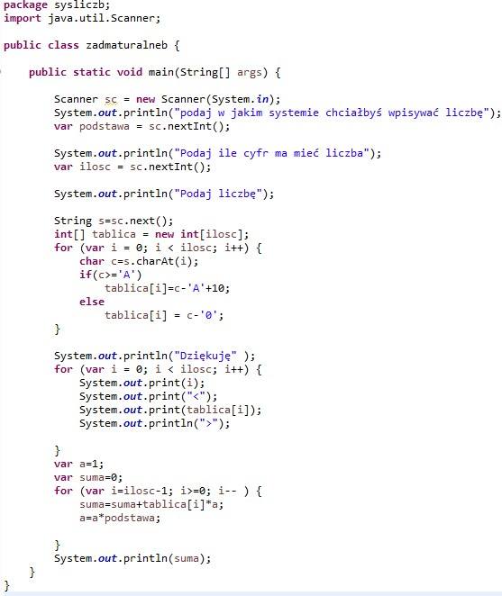
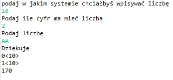

Moje CV
Moje kompetencje: Przez około 2 lata (w 6 i 8 klasie) uczyłam się programowania w instakodzie czyli w nowoczesnej platformie edukacyjnej przeznaczonej do nauki podstaw programowania. Uczestniczyłam również w dwóch lekcjach z html gdzie uczyłam się tworzyć stronę internetową z napisami (pogrubionymi, podkreślonymi i pochyłymi), ze zdjęciami, linkami oraz prostymi skryptami w języku JavaScript. Niektóre znich są widoczne na tej stronie.
Podczas bieżącego roku szkolnego moją naukę skoncentrowałam głównie na Javie. Nauczyłam się tam wielu rzeczy. Na przykład jak używać:
Pośród tych niezliczonych rzeczy poznałam również różne systemy liczbowe, po czym stworzyłam program, który umie je obliczać (nawet system szesnastkowy:)).
 Poznałam także blendera, w którym praca sprawiła mi przyjemność ponieważ dzięki niemu moje pomysły, które dotychczas istniały jedynie w mojej głowie oraz na kartkach zeszytu mogły ożyć
Projekt, który wykonałam w blenderze:


Czego chciałabym się nauczyć: programowania.
Plany na przyszłość:
1)zdać maturę
2)pójść na studia
3)zdobyć pracę
4)kupić mieszkanie
5)stworzyc firmę
6)kupić lamborghini
Darmowy przyjaciel, kliknij tutaj

Czy chcesz mnie zatrudnić?

Dziękuję za ofertę, lecz jestem nieletnia przez co nie mogę pracować.